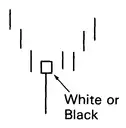
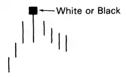
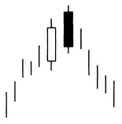
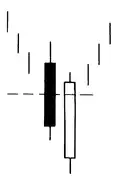
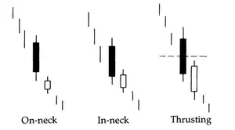
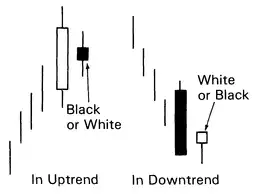
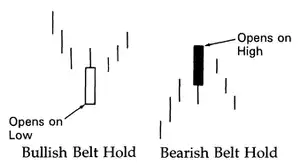

Candlesticks - Reversals
Hammer
- Hammer occurs in the downtrend.
- Real body can be black or white.
- Long lower shadow should be twice the height of the real body.
- Has no or very short upper shadow.
- Standalone candlestick.
Hanging Man
- Hanging Man occurs in the uptrend.
- Real body can be black or white.
- Long lower shadow should be twice the height of the real body.
- Has no or very short upper shadow.
- Standalone candlestick.
Engulfing Pattern

- Must be in uptrend or downtrend (even the short one).
- The second candlestick must engulf the first one real body (may not engulf the shadows).
- The real body colors must be opposite
Dark Cloud Cover
- The greater degree of penetration, the more likely reversal will occur.
- Some technicians require 50% penetration.
Piercing Pattern
- The greater degree of penetration, the more likely reversal will occur.
- Must push more than halfway into the black real body.
On-neck, In-neck, Thrusting Pattern
- Occur in downtrend
- Difference from Piercing Pattern - degree of penetration into the black candlestick.
Harami
- Small real body contained in prior long real body
- Size ov previous body is not important
Tweezers Tops & Bottoms

Belt Hold Line
Upside Gap Two Crows

Three Black Crows

Counterattack Lines

- Formed when opposite colored candlesticks have the same close.
Dumpling Tops & Fry Pan Bottoms

Tower Tops & Tower Bottoms